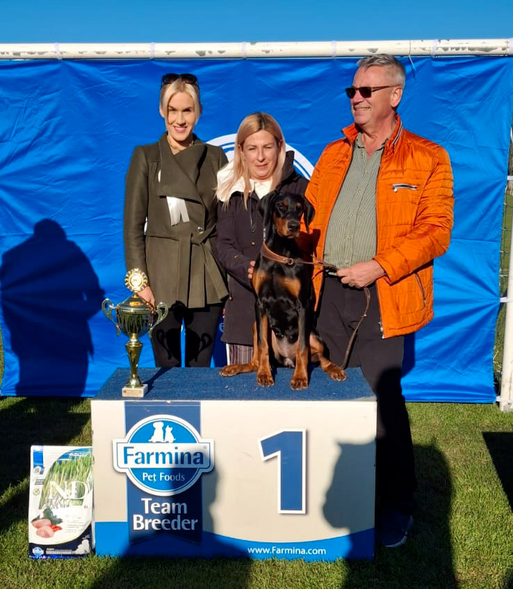
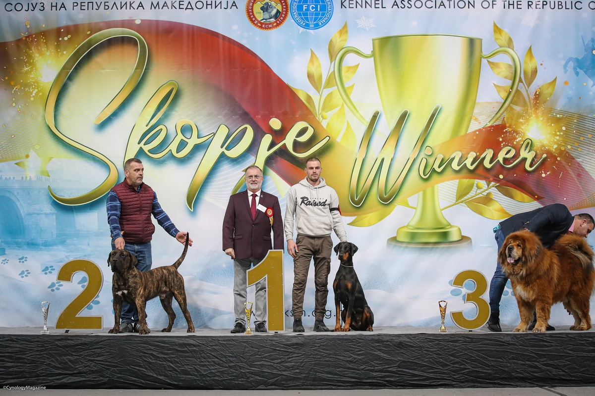

The simbiosis with these beautiful creatures makes us different and more fulfilled, and it makes us happier because we have an opportunity to participate in the creation of something beautiful and perfect as Doberman. We live for a day when every new litter which we created will be bread, hoping that we shall achieve to create an even better litter from the one that came before and we shall further improve the breed. Even after so many years we still have many sleepless nights because we contemplate another combination in the future. It is nice to live daily with sweet uncertainty while watching how the beautiful small creatures grow into the fulfillment of your dreams every day. Altobello is a family. Altobello is friendship. Doberman is a million violins, the sky above us. Altobello Doberman is a living dream.
Romanian Dobermann Club
Chaba Majoros Memorial
National Club Show
Date: 19.10.2024.
Judge: Triona Ni Shen (IRE)
Nera Hera di Altobello 5 months old
(first time in the competition)
VP1 Baby Club Winner!!!

TISA DI ALTOBELLO
(Fireghost Fantast di Altobello x Joy di Altobello)
Date: 2.12.2022.
CACIB I
Judge: Jane Serafimov
Open class: R.CAC
Date: 3.12.2022.
CAC I
Judge: Dragan Kitanoski
Open class: CAC, CACIB, BOB, BOG 2
CACIB II
Judge: Christian Jouanchicot
Open class: CAC, CACIB, BOB, BOG 1

The best dobermann for competition and profesionnal breeders dogs of the mentioned race.
Living with Doberman is a privilege.
Living for Dobermans is something altogether more than that.